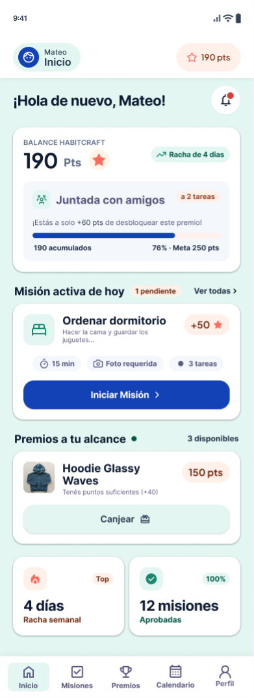
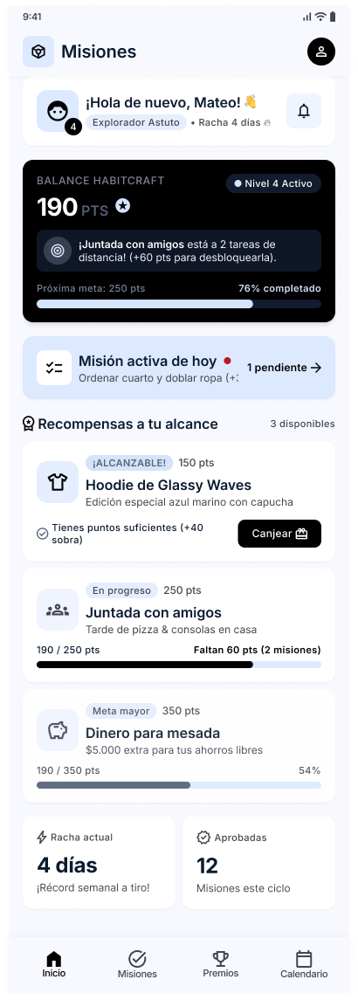
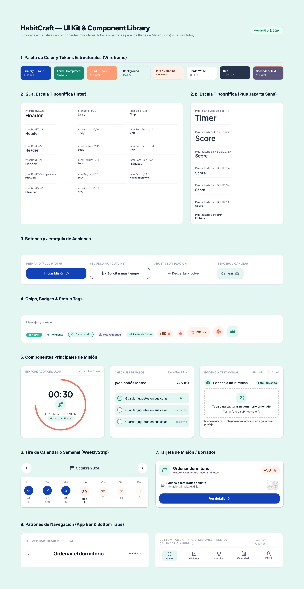
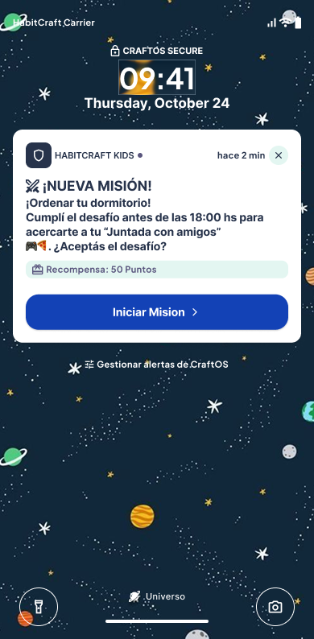
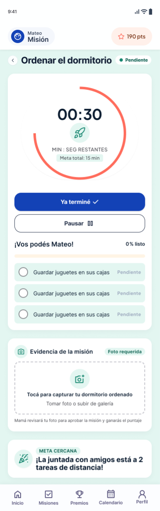
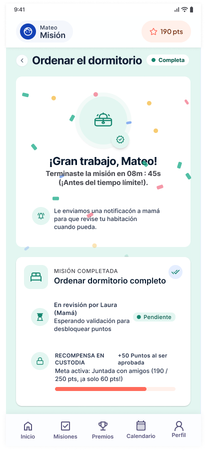
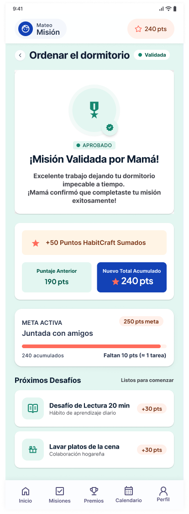
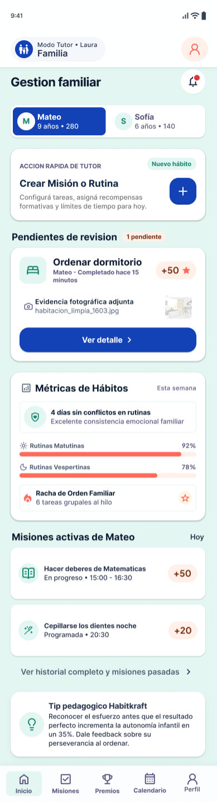
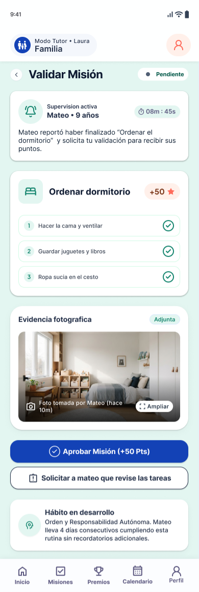

HabitCraft Kids
App móvil que convierte las rutinas del hogar en misiones para niños y simplifica la gestión de los adultos.
[Una frase sobre qué resuelve el dashboard]

El problema
Gestionar rutinas es una fuente de fricción entre padres e hijos. El reto: motivar a los niños sin premios monetarios y sin sumar carga a los padres. Diseñé para Mateo (9 años), que ejecuta las misiones, y Laura (38), que las crea y valida.
Lo que descubrí
Los premios transaccionales dividen a los padres. Los premios pasaron a ser experiencias compartidas, no dinero.
Si la app es una carga, se abandona. Los padres hablaron de 5 a 15 minutos diarios como máximo, así que los flujos son cortos.
Un día de Mateo (9 años) y Laura (38). La curva resume cómo cambia la emoción de cada fase, y cada fase se abre para ver el detalle.
1Despertar y rutina mañaneraFrustración → Curiosidad
Sin la app
La madre repite varias veces que se vista y desayune a tiempo.
Oportunidad: Automatizar avisos matutinos para evitar la fricción verbal inicial
Con HabitCraft
Suena una alarma lúdica en la tablet con la misión «Desayuno y Vestimenta».
2Partida al colegioAnsiedad → Motivación
Sin la app
Salida apresurada, revisando a última hora si lleva la mochila completa.
Oportunidad: Checklist visual rápido antes de salir de casa
Con HabitCraft
Mateo marca sus tareas matutinas completadas y gana sus primeros puntos del día.
3Regreso a casa y deberesResistencia → Enfocado
Sin la app
El niño se resiste a hacer los deberes y prefiere jugar videojuegos o ver TV.
Oportunidad: Desglosar los deberes en bloques cortos con incentivos claros
Con HabitCraft
Recibe la notificación de «Misión de Deberes Escolar» y empieza motivado por sumar puntos.
4Orden de espaciosFastidio → Entusiasmo
Sin la app
La madre insiste varias veces para que recoja juguetes y ropa del suelo.
Oportunidad: Vincular el orden físico a una recompensa inmediata
Con HabitCraft
Limpiar la habitación se presenta como un desafío contrarreloj para desbloquear accesorios.
5Preparación nocturnaCansancio → Calma
Sin la app
Conflicto a la hora de bañarse y prepararse para dormir.
Oportunidad: Establecer una rutina nocturna predecible y autónoma
Con HabitCraft
Cumple la rutina de noche para ganar el bonus diario de descanso.
6Cierre del díaAgotamiento → Satisfacción y orgullo
Sin la app
Balance nocturno de agotamiento familiar y tensión acumulada.
Oportunidad: Reducir el desgaste diario de los padres mediante validación rápida
Con HabitCraft
Laura valida todo en 1 clic desde el móvil; Mateo ve evolucionar su avatar.
Decisiones de diseño
El card sorting (10 personas, dos rondas) llevó a renombrar «Tareas» como «Misiones» y «Recompensas» como «Premios». El tono cambia según la situación: ante una tarea vencida, el mensaje no culpa y ofrece reprogramar.
«Desafíos» se dispersó entre Tareas, Recompensas y Calendario, y Ayuda y Ajustes se repartieron entre varias secciones, por eso pasaron a ser accesos transversales. La navegación final:
Camino estético
El benchmark mostró universos RPG, mascotas invasivas y estéticas financieras. Elegí «energía amable»: azul cobalto, coral y verde pino, sin rojos agresivos. Usé Stitch para explorar y reconstruí todos los componentes a mano en Figma, con variables, variantes y Auto Layout.

Conservé
La jerarquía modular del dashboard, por su legibilidad.
Rehice
Todos los componentes, a mano en Figma: tarjetas con estados empáticos, barras de progreso semanales y microetiquetas, con variables, variantes y Auto Layout.
Descarté
Las penalizaciones visuales agresivas, como las alertas rojas, y las mecánicas de tipo financiero.
[Señala en la captura dónde se ve cada cambio]
Mini UI kit
Los colores y las tipografías del sistema.
Los acentos de color se reservan para el progreso y los logros, y los errores evitan el rojo agresivo.

Anatomía del dashboard
Las decisiones que están a la vista en la pantalla principal.
Tarjetas con estados empáticos. [Por qué]
Microetiquetas. [Por qué]
Barras de progreso semanales. [Por qué]
Paleta sin rojos agresivos. [Por qué]
Solución
El prototipo cubre dos flujos.
Flujo 1: Mateo inicia una misión




Flujo 2: Laura crea y edita una misión


Validación
Antes del prototipo final, el equipo probó los wireframes con 2 personas y 4 tareas: 3 de 4 tareas exitosas. Fue un test exploratorio y el prototipo final todavía no se testeó con usuarios.
Niño completa una misión
Hallazgo
Esperaba marcar subtareas primero y el cronómetro bloqueó el prototipo.
Acción
Aclarar las reglas de tiempo y reiniciar los estados.
Niño consulta puntos y premios
Hallazgo
Fue directo a Premios en 2 clics y menos de 15 segundos.
Acción
Mantener el puntaje siempre visible.
Adulto crea y asigna una misión
Hallazgo
Lo logró en 3 clics, pero la redirección fue abrupta, sin confirmación.
Acción
Agregar un mensaje de éxito.
Adulto revisa y aprueba una misión
Hallazgo
Dos botones competían: Ver detalle y Aprobar.
Acción
Unificar en un solo botón principal.
Próximos pasos
Testear el prototipo final, aplicar los hallazgos de los wireframes y prototipar los flujos pendientes.